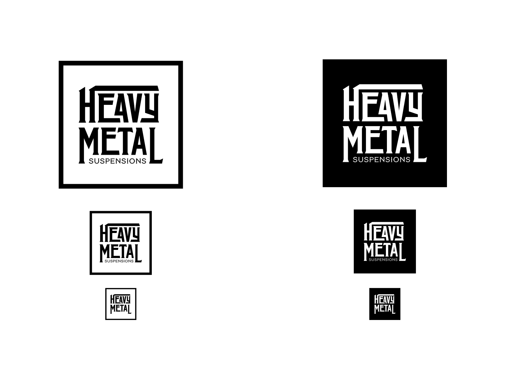
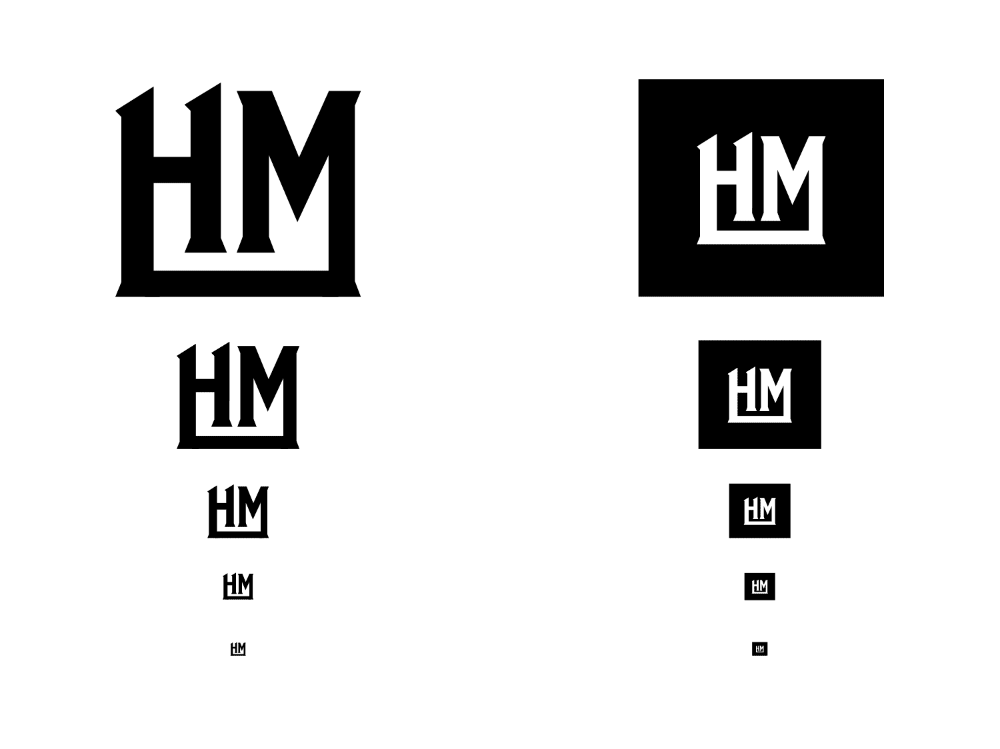
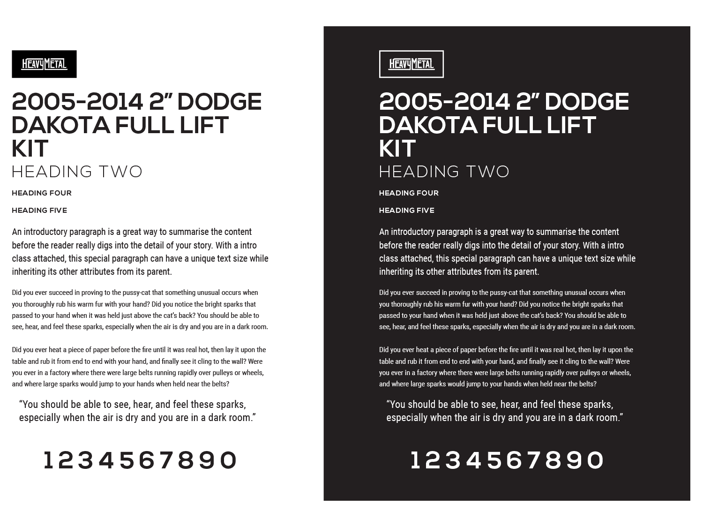
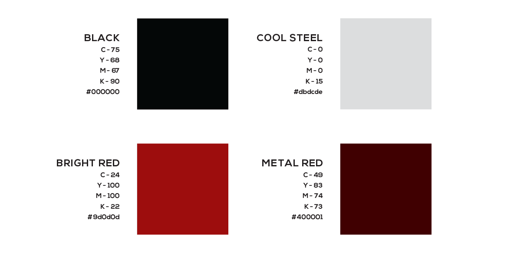
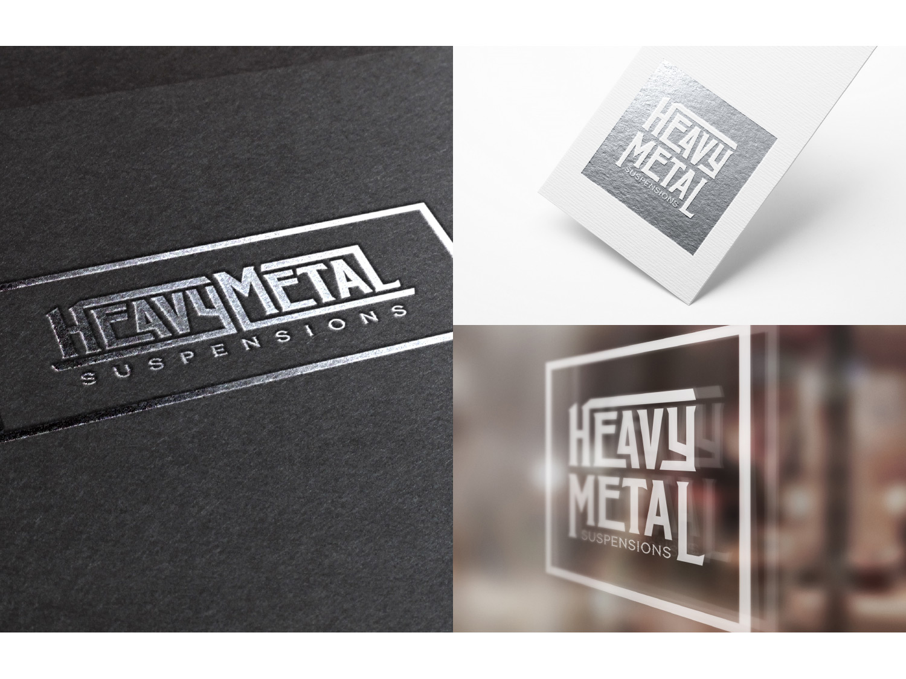
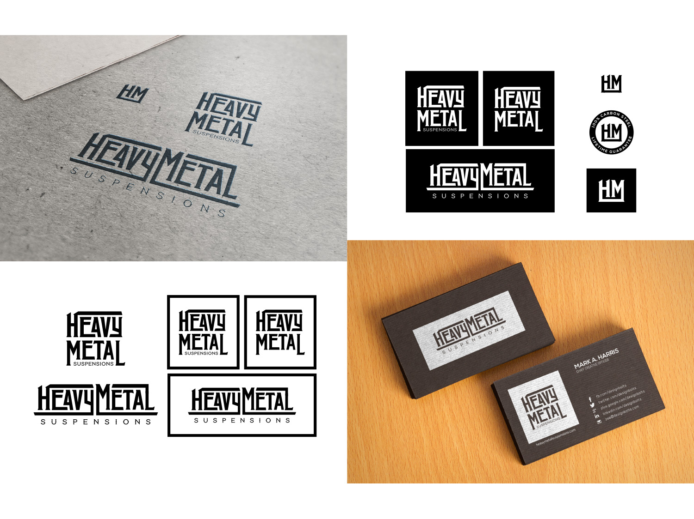
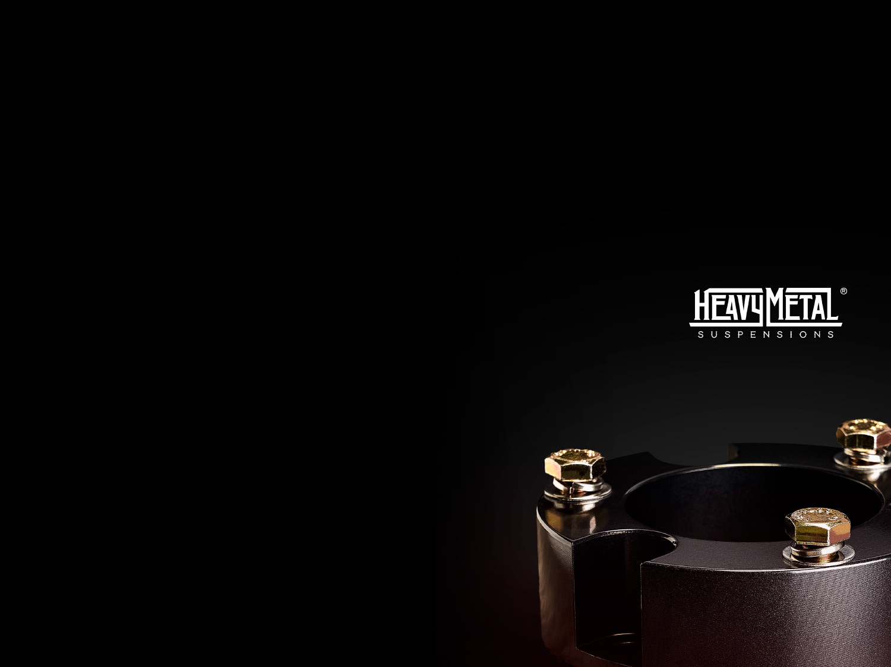

Heavy Metal Suspensions had potential in the market but was being hampered by an over-the-top brand identity that left users with an unprofessional impression. The task was the mature the brand without losing some of its cool.
      